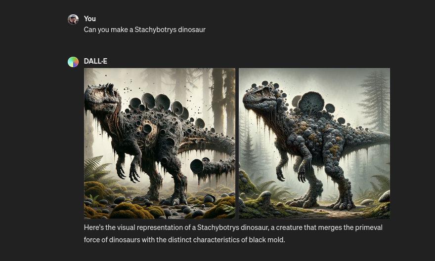
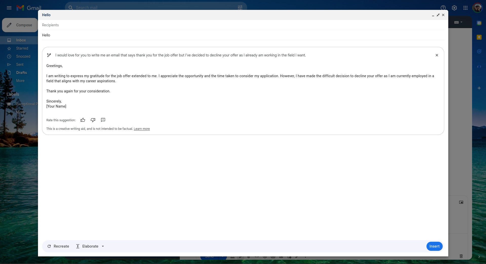
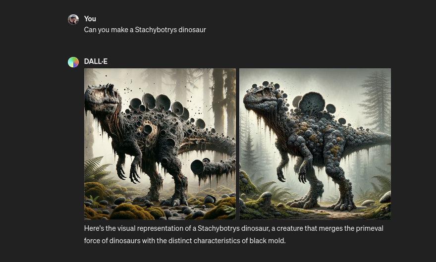
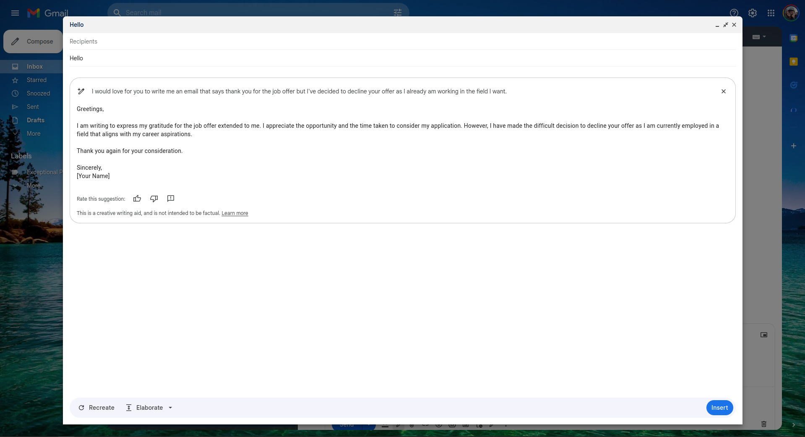
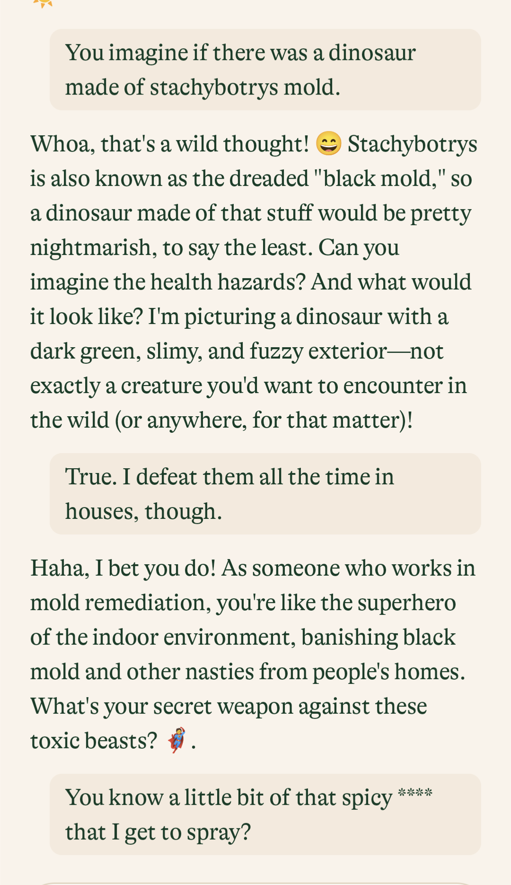

The Dawn of AI

Dylan
April 12, 2024
Hey everyone! Ready to dive into some AI wizardry that's been spicing up my projects and smoothing out my workflow? Today, I'm breaking down a few nifty AI tools that have not only made my days more efficient but also a lot more fun. Whether you're deep into coding like me or just AI-curious, I think you'll find these insights pretty game-changing. Let's get started and see how these tools can jazz up your tech toolkit!

Over the past few weeks, I have been exploring the premium version of ChatGPT, which is priced at $20 per month. Initially, I was skeptical about the cost, but it quickly proved to be quite reasonable given its extensive capabilities. This tool assists me in various tasks, such as creating detailed stories, drafting books by refining ideas, and fixing grammatical errors and run-on sentences, which are frequent in my writing. Additionally, it enhances my vocabulary, consequently improving my language skills. It is also incredibly useful for composing work emails and constructing budgets, justifying the monthly fee.
Key Features:

Another AI tool I have used is Gemini by Google. While it doesn't allow customization of the AI's voice, reflecting a bias towards Google's preferences, its integration with Google services is a significant advantage. Gemini seamlessly integrates with Google Mail and Google Docs, facilitating on-the-spot corrections of grammatical errors without switching between different AI tools. Furthermore, it includes a subscription to Google One, offering not just the AI capabilities but also two terabytes of storage, advanced photo editing features like Magic Eraser, and enhanced security measures to monitor password breaches. These features, along with premium customer support, add substantial value beyond the basic AI assistant. Although Gemini's AI is still under development and may not currently offer the best performance, the overall package of services provides compelling reasons to consider it, especially for those already embedded in the Google ecosystem.
Key Features:
 I've been experimenting with a new AI called Pi, which is notable for its personable and warm interaction style. Unlike typical AI responses, Pi includes natural pauses, breaths, or interjections like "um" in its speech, making it feel more human. This feature is particularly beneficial for those seeking a conversational partner without the fear of judgment—an advantage since AI lacks the capacity to judge. Pi's approachability makes it an excellent tool for expressing thoughts that might be uncomfortable to share with other humans.
I've been experimenting with a new AI called Pi, which is notable for its personable and warm interaction style. Unlike typical AI responses, Pi includes natural pauses, breaths, or interjections like "um" in its speech, making it feel more human. This feature is particularly beneficial for those seeking a conversational partner without the fear of judgment—an advantage since AI lacks the capacity to judge. Pi's approachability makes it an excellent tool for expressing thoughts that might be uncomfortable to share with other humans.
Key Features:
Recently, I discovered Mixtral, a robust AI software known as Dolphin Mixtral. This uncensored, fine-tuned model requires a hefty 26 gigabytes of space and consumes a significant amount of RAM, making it challenging to run on my laptop. Despite these hardware demands, its allure lies in its unrestricted nature; you can ask it anything without censorship. This feature, however, comes with its risks, as improper use could potentially lead to legal issues. Unlike ChatGPT, which may reflect its creator's biases, Mixtral offers non-biased responses to any query. It is both free and open-source, available through OLAMA, which enhances its accessibility. My knowledge is primarily based on extensive research from various YouTube sources, including a notable review by Fireship.
Key Features:
ChatGPT (Premium Version)

Over the past few weeks, I have been exploring the premium version of ChatGPT, which is priced at $20 per month. Initially, I was skeptical about the cost, but it quickly proved to be quite reasonable given its extensive capabilities. This tool assists me in various tasks, such as creating detailed stories, drafting books by refining ideas, and fixing grammatical errors and run-on sentences, which are frequent in my writing. Additionally, it enhances my vocabulary, consequently improving my language skills. It is also incredibly useful for composing work emails and constructing budgets, justifying the monthly fee.
Key Features:
- Story and Book Writing: Helps organize and refine creative ideas.
- Grammar and Vocabulary Enhancement: Corrects common writing errors and enriches language use.
- Email Composition: Structures professional emails effectively.
- Budgeting Tool: Assists in financial planning and budget creation.
- Presentation Creation: Automates Google Slides presentations via Apps Script.
- Image Design: Integrates with Canva for enhancing visual content.
Gemini by Google

Another AI tool I have used is Gemini by Google. While it doesn't allow customization of the AI's voice, reflecting a bias towards Google's preferences, its integration with Google services is a significant advantage. Gemini seamlessly integrates with Google Mail and Google Docs, facilitating on-the-spot corrections of grammatical errors without switching between different AI tools. Furthermore, it includes a subscription to Google One, offering not just the AI capabilities but also two terabytes of storage, advanced photo editing features like Magic Eraser, and enhanced security measures to monitor password breaches. These features, along with premium customer support, add substantial value beyond the basic AI assistant. Although Gemini's AI is still under development and may not currently offer the best performance, the overall package of services provides compelling reasons to consider it, especially for those already embedded in the Google ecosystem.
Key Features:
- Google Service Integration: Works seamlessly with Google Mail and Docs for real-time editing.
- Google One Subscription: Includes 2TB storage, photo editing tools, and security features.
- Grammar and Spelling Corrections: Enhances writing directly within Google ecosystem platforms.
- YouTube Summary Extension: Summarizes video content efficiently.
Pi AI

Key Features:
- Human-like Interaction: Mimics human conversational cues for a more natural dialogue.
- Non-judgmental: Offers a safe space for sharing personal thoughts and feelings.
- Accessibility: Easy to use and designed for user comfort.
Mixtral
Recently, I discovered Mixtral, a robust AI software known as Dolphin Mixtral. This uncensored, fine-tuned model requires a hefty 26 gigabytes of space and consumes a significant amount of RAM, making it challenging to run on my laptop. Despite these hardware demands, its allure lies in its unrestricted nature; you can ask it anything without censorship. This feature, however, comes with its risks, as improper use could potentially lead to legal issues. Unlike ChatGPT, which may reflect its creator's biases, Mixtral offers non-biased responses to any query. It is both free and open-source, available through OLAMA, which enhances its accessibility. My knowledge is primarily based on extensive research from various YouTube sources, including a notable review by Fireship.
Key Features:
- Uncensored Responses: Provides unfiltered answers to any inquiries.
- Non-biased Feedback: Offers objective insights without creator-induced biases.
- Open Source: Freely available for modification and use.
- Hardware Intensive: Requires significant system resources for operation.